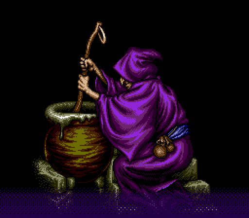
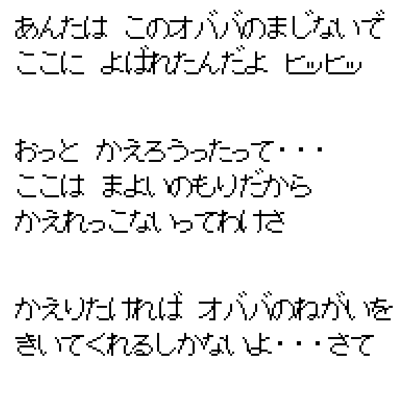
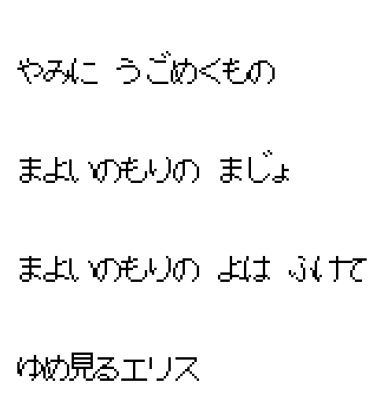
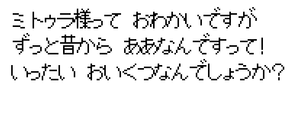
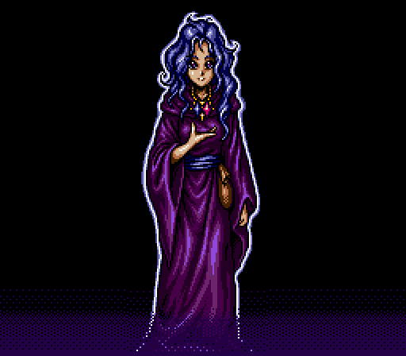
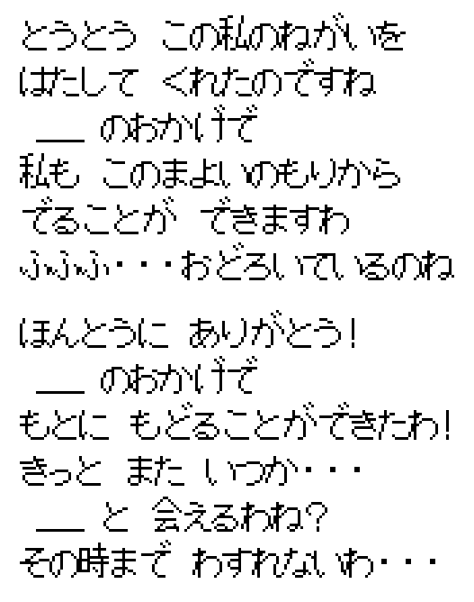
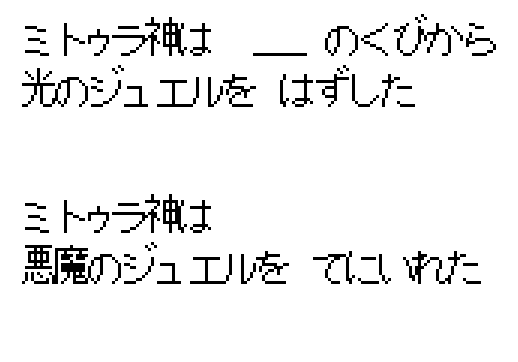
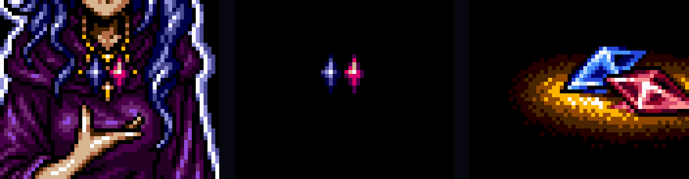
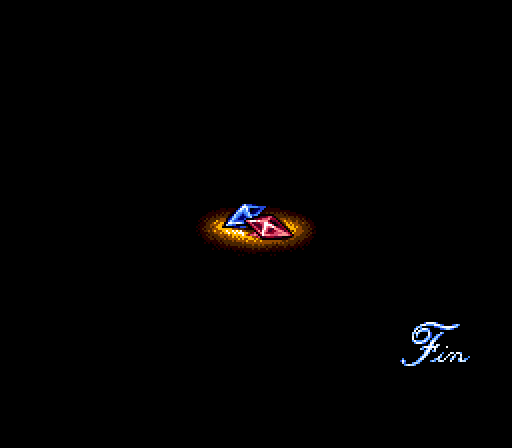
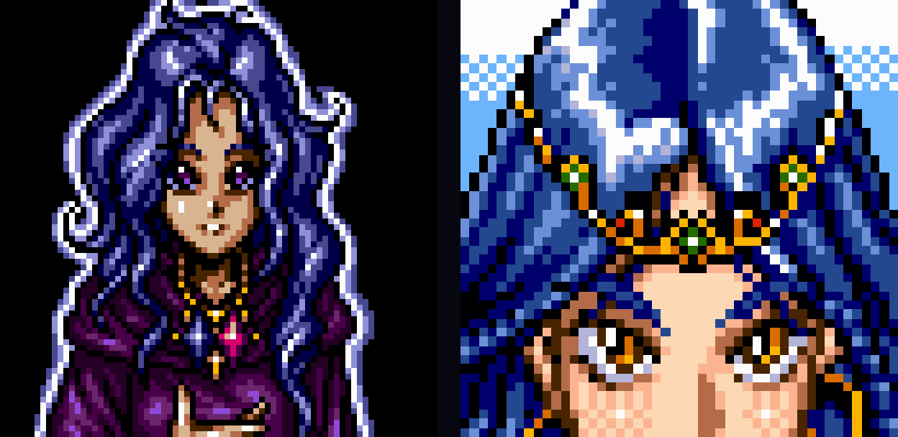

Home › Shining Force II › The witch and Mitula
Shining Force II — Is the Witch Mitula?
The woman at the end of the game, read out of both ROMs

The short version
Nothing in either ROM says the witch is Mitula. Her lines call her a spellcaster stuck in a magic forest; the Japanese script has her call herself an old hag. She and Mitula share no portrait, no sprite, no voice bleep and no music, and their names never cross.
One thing does connect them, and it was put there on purpose. The woman the witch turns into after the credits wears the Jewel of Light and the Jewel of Evil at her neck, the same two stones Mitula walks off with in the last story scene. The ending code draws those two jewels on a separate layer so that she can fade away and leave them behind, falling, until they land on the Fin screen. That is the whole case for the theory, and it is not a small one.
Where the question comes from
Start a new game and the first character on screen is a hooded witch at a cauldron. She asks your name, asks how hard you want the game to be, and from then on she is the save menu. Deep in the story you meet Mitula, the goddess who rules Tristan from a shrine in the mountains, and near the end she comes down to Arc Valley, takes both legendary jewels off your hands and goes to reseal Zeon.
Then you kiss the princess, the credits roll, and the witch is back. She thanks you for granting her wish, the screen goes white, and in her place stands a young woman with long blue hair who says you have let her return to her original form. Mitula also has blue hair. People have been asking whether the two are the same woman for thirty years, and the usual answer, on Shining Force Central and elsewhere, is a shrug: she does not look much like Mitula, and if she were Mitula she would be in two places at once.
I wanted a better answer than a shrug, so I went through the ROM. Both ROMs, in fact, because the Japanese script is not the same as the English one and this is exactly the sort of detail that gets flattened in translation.
Getting the text out
The dialogue in Shining Force II is not stored as readable text. Every string is
Huffman-coded, and the coding uses a different tree depending on which symbol came
before, so a plain search of the ROM for "Mitula" finds only the name in the enemy and
ally name tables. The decoder at $02E13A in the US ROM reads the previous
symbol, looks up a 16-bit offset in a table at $02E196, walks the tree at
$02E394 plus that offset, and hands back one symbol. Seventeen banks of up
to 255 strings follow from $02EB34; the pointer table to them sits at
$041FDA and is itself pointed to from $028000.
That is enough to write a decoder, which I did in Python. The US ROM gives back 4267
strings. The Japanese ROM has the same decoder at $02D8EE, tables at
$02D94A and $02DB48, banks from $02F83A, and 4298
strings. Its symbols are indexes into a kana and kanji font rather than ASCII, so I
rendered the Japanese lines with the game's own glyphs, 32 bytes each from
$028FCE, and read them off the screen. The
SF2DISASM
project documents the tree format and the US layout, which saved me a good deal of
guessing; the Japanese offsets I found by searching that ROM for the decoder's own
machine code.
What the witch says
Her opening lines, in English, are these. Text indexes are in hexadecimal.
00D8 Hee, hee, hee... You're finally here! 00D9 Ah, you look so confused. You don't know why you're here? 00DA Yes, yes... I used a spell on you. 00DB Ha, ha. Where are you going? You can't escape 00DC from this mystery forest unless you help me. 00DD Whatcha gonna do?
So she is not a fortune teller, whatever the crystal ball on her table suggests. There is a fortune teller in Granseal, a different NPC with her own lines, and her neighbour will tell you she is a liar. The witch is a caster who has pulled you into a forest with a spell and wants a favour. The "favour" is the menu: new game, continue, copy, delete.
The Japanese text is blunter about who she is.

"You were called here by this obaba's spell, hee hee." Obaba is how an old woman refers to herself when she is playing up her age: granny, old hag. "Even if you try to go home, this is the mayoi no mori, so there's no way back." The forest where you lose your way. "If you want to go home, you'll have to grant granny's wish." Her verbs and particles are an old woman's throughout: あんた, だよ, かね.
The music that plays under her has a name in the Japanese sound test, and the name is
not Mitula's. The track list starts at string 01CC and runs in the same order as the
sound test's own table of track numbers at $007FA4, a menu the US
cartridge dropped. The second entry, hers, reads まよいのもりの まじょ: the Witch of
the Forest of Wandering. The track the disassembly calls MUSIC_MITULA, which
plays when the goddess shows up, is nineteen entries further down the list and is called
ゆめ見るエリス, Dreaming Elis. Whoever named those tracks thought of the witch as
a character in her own right, and thought of Mitula's theme as belonging to the sleeping
princess.

What the game says about Mitula
Forty-three English lines mention her by name, fifty-four in Japanese. Most are townspeople in Tristan. The ones that matter for this question come from the scene after Zalbard, when she appears in her own shrine and Astral asks what to do next.
0ADE But, why? You're a goddess. You know our future, right?
0ADF I'm not Volcanon. I never tell people the future,
even if it could prevent death.
0AEE Down to the surface. To save the people.
She lives in a shrine north of Tristan, not in a forest. She does not tell fortunes. She is not trapped anywhere; when she wants to leave, she dissolves and leaves. And a soldier in Granseal, late in the game, gives the one line about her that the theory leans on:
0DF6 Mitula looks young, but she is actually quite old.
In Japanese that line is longer, and a bit funnier: "Lady Mitula looks young, but they say she's been like that since forever! How old is she, really?"

That is a goddess who looks young and is old. The witch is a woman who looks old and, as it turns out, is young. The two lines do rhyme, and I suspect they were meant to. But a rhyme is all they are.
The order of the ending
The whole ending is triggered from one zone event in the map of Granseal Castle's
first floor, in the zone-event block at $06329A, when you step up to the sleeping princess and
answer yes. In order it runs the kiss cutscene, the credits, a short scene with Astral
and the king under the piano theme, and then jumps to WitchEnd at
$007094. That routine rebuilds the title-screen witch, gives her string 00EE,
fades to white and calls EndGame at $0279D8, which loads a second
full-screen picture and gives her string 00EF.
00EE Finally, you've fulfilled my wish!
Thanks to you, I can escape from this forest!
Are you really that surprised?
00EF {NAME}, I thank you. You enabled me to return to my original form.
Someday we'll meet again. I'll never forget you....

EndGame loads from $1C6F2C. Same robe, same sash, same pouch, hood down.Look at what she is wearing. It is the witch's robe with the hood pushed back. The blue sash is the witch's sash. The pouch at her hip is one of the two pouches on the witch's belt. Whatever "original form" means, the artist drew it as the same woman with the years taken off, not as somebody else stepping out of a costume.
The Japanese lines for the two screens make the same point with more words, and they do something the English does not.

"At last you have granted this wish of mine. Thanks to you I can leave this forest. Fufufu... you are surprised, aren't you." And after the change: "Thank you, truly. Thanks to you I could go back to what I was. Surely, someday... we'll meet again, won't we? I won't forget you until then."
The thing to notice is the grammar. The hooded witch at the start of the game talks like a crone. The hooded witch after the credits, before she has changed shape, has already switched to the soft, polite, feminine register: のですね, できますわ. That is the register Mitula speaks in every time she appears: そうですわ, もらうわ, 行くわ. In Japanese fiction that switch is a standard way of telling the audience that the crone was a disguise. It is also how every adult woman of rank talks in this game, so it points at Mitula without naming her.
The jewels
Here is the part that made me rewrite my conclusion. In the last story scene, after Zeon is beaten, Mitula turns up in Arc Valley and the narration says:
0F2A Mitula took the Jewel of Light from {LEADER}.
0F2C Mitula took the Jewel of Evil.
The Japanese narration is more specific about the first one: ミトゥラ神は {NAME}の くびから 光のジュエルを はずした, "Mitula removed the Jewel of Light from {NAME}'s neck." The jewel had fused to Bowie's neck earlier in the game and she is the one who takes it off. Then she takes the other, says she must reseal Zeon before he recovers, tells everyone to run, and vanishes. She is the last person in the story to hold both stones.

Now go back to the ending picture and look at her neck. A blue jewel on the left, a
red jewel on the right. They are painted into the picture itself, and then
EndGame draws them a second time. It writes four tile words,
$2138 $2139 and $2142 $2143, into plane A at layout offsets
$21E and $25E, which is a 16 by 16 pixel block at tile column 15,
rows 8 and 9, exactly over the pendant. The palette bit on those words is set, so the
copy on plane A uses palette 1 while the picture behind it uses palette 0. Both palettes
hold the same colours, so on screen you cannot tell the copy is there.
The reason for the copy comes a few instructions later. After her line, the routine fades palette 0 to black, and only palette 0. The woman disappears; the two stones on plane A stay lit. Then it installs a vertical-blank handler that decrements the vertical scroll every frame, so the stones drift down the screen. Then it fades palette 1 as well, clears plane A, and loads the last picture: the same blue and red stones lying together in a pool of light, with Fin in the corner.


$1EF142.Somebody planned that. It takes a second copy of the sprite, a second palette and a custom interrupt handler to make two 16-pixel stones fall off a woman who is no longer there. The point of the effort is to tell you that the woman had the jewels and that the jewels are what remains once she is gone. And the only character who had the jewels when the story stopped was Mitula.
Everything that keeps them apart
Against that stands the whole rest of the cartridge. I checked each of these in the US ROM; the Japanese one matches on every point I looked at.
| The witch, and the woman she becomes | Mitula | |
|---|---|---|
| Name | Never named, in either language | Named in 43 English and 54 Japanese lines |
| Home | A magic forest she cannot leave | A shrine in the mountains north of Tristan |
| Art | Two full-screen pictures at $1C4E88 and $1C6F2C | Portrait 36 at $1D2B9A, map sprite 215 at $FB018 |
| Shared tiles | None between the ending picture and the portrait, checked tile by tile | |
| Face | Violet eyes, no headdress, gold chain with the two stones | Amber eyes, gold circlet with a green gem, hoop earring |
| Dress | Purple robe, blue sash | White gown, on portrait and sprite alike |
| Voice bleep | Bleep 4 in the hood, bleep 2 without it | Bleep 3 |
| Music | Track 10, "Witch of the Forest of Wandering" | Track 14, "Dreaming Elis" |
| Farewell | "Someday we'll meet again" | "Stay well, all of you" (Japanese); "Now, I must go. Good luck." (English) |

Two of those rows carry more weight than the others. Track 10 is also the music the game plays for Zeon's court in Arc Valley, for the Evil Spirit Shrine and for Devil's Head; it is the eerie theme, not a goddess theme. And the witch's ending voice is bleep 2, not Mitula's bleep 3, which would have been a one-byte way to wink at the player if anyone on the team had wanted to.
So, is she?
The ROM does not say, and I do not think it was meant to. What it does is stack the deck. A framing character who is old and turns out young, opposite a goddess who is young and turns out old. A crone who starts speaking like the goddess the moment the game is won. A woman who wears the two jewels the goddess carried off, and sheds them on her way out. None of that is proof. All of it is deliberate.
My reading is that the witch is the game's narrator, the person to whom the whole story has been told, and that the ending lets you decide whether the narrator was Mitula all along or simply an immortal of the same order. If you want her to be Mitula, the jewels are yours to point at, and they are a better argument than the hair. If you want her to be someone else, the cartridge will not contradict you either. It just will not help.
How this was done
The subjects are Shining Force II (USA), 2 097 152 bytes, MD5
6473b1505334ef5620d13191c18251fe, and Shining Force II: Koe no
Fuuin (Japan), same size, MD5 3ba871d87f35feefcadfa9d4a2c06d13.
Every address above is an offset into one of those files.
The text decoder follows the routine at $02E13A instruction by
instruction: one Huffman tree per preceding symbol, leaf values stored backwards from the
tree offset, a 1 bit for a leaf and a 0 bit for a node. The decoded US script matches the
one in the SF2DISASM repository line for line, which is how I know the decoder is right.
For the Japanese ROM I located the decoder by searching for the same machine code with
the two lea displacements left as wildcards, and the font by scanning for
runs of 32-byte blocks with the glyph header's shape.
The pictures use the game's "stack" compression: a bit stream of four-bit command
groups, literal words assembled from a move-to-front history of sixteen nibbles, and
back-references of up to eleven bits. My decoder reproduces the documented decompression
of the SEGA logo byte for byte. Map sprites use the simpler word-level scheme with
10 08 04 01-style command bitmaps. Portraits are the stack scheme behind a
small header of blink and mouth tiles. All of it is a few hundred lines of Python and a
copy of the ROM, and the ending sequence was traced through the zone event block at
$06329A, WitchEnd at $007094 and
EndGame at $0279D8.
If you read the Japanese lines differently, or find a line I missed, tell me. There are 4298 of them and I read the ones that mention the witch, the forest, the jewels and the goddess.
Questions people actually ask
Does Shining Force 2 ever say that the witch is Mitula?
No. Neither ROM has a line that names the witch, or the woman she turns into, as Mitula. Her own lines make her a spellcaster trapped in a forest, and in Japanese she calls herself an old hag.
What is the strongest clue that the witch is Mitula?
The jewels. Mitula takes the Jewel of Light and the Jewel of Evil away with her in the last story scene. After the credits the woman is wearing a blue stone and a red stone, drawn on a separate layer so that they stay behind when she fades, fall down the screen and land on the Fin picture.
Is the ending different in the Japanese version?
Same sequence, different words. She calls herself obaba, names the place mayoi no mori, and after the change says she has gone back to what she was and hopes to meet you again. Her speech also shifts from a crone's register to the polite feminine one Mitula uses, before the transformation rather than after it.
Do the witch and Mitula share any graphics or sounds?
Nothing. Separate pictures, separate portrait and sprite, separate dialogue bleeps, separate tracks, and no shared tiles between the ending picture and Mitula's portrait.
Credits
The tree and picture formats are documented in
SF2DISASM,
the Shining Force Central disassembly of the US ROM; the labels WitchEnd,
EndGame and MUSIC_MITULA are theirs. The question itself has
been argued on the
Shining Force Central forums
for longer than this site has existed.